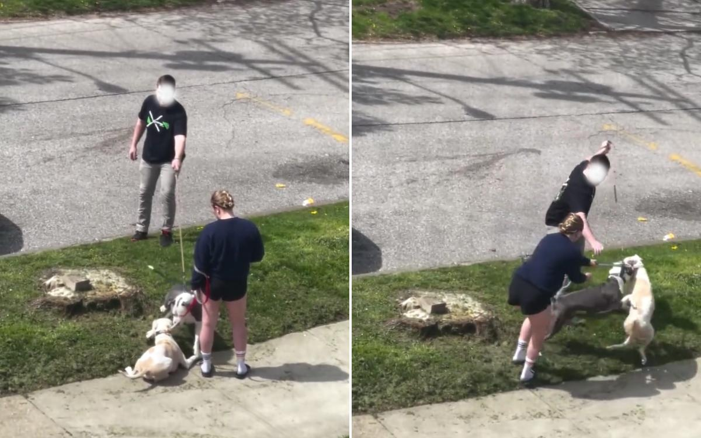

Pet Trainer's Video Shows Why You Should Never Introduce Dogs on a LeashA professional pet trainer in Cleveland, Ohio, has shared a real-life example of how not to introduce dogs to one another. Matthew Slaughter teaches basic and advanced canine obedience and works with behavior modification and dog rehabilitation. In recent weeks he has gained fame on TikTok after posting a video of a fraught encounter between two dogs who were introduced to each other on the leash. Filmed from the window of his apartment, the clip captures the two pitbulls—named Tito and Hemi, as can be heard in the footage—on opposite sides of the road being brought together for a first meeting. Slaughter can be heard in the clip attempting to intervene. He repeatedly tells the owners "don't do it" as the two dogs come into contact with one another. Unfortunately, his pleas go ignored and chaos ensues. The owner of Right Way K9 Training told Newsweek he began recording the clip after hearing "two loudly snarling dogs" outside his home. "At first glance, I figured they'd just keep it moving but it struck me as odd when the woman suddenly stopped, turned, and faced the other dog owner with inviting body language," he said. "I said to myself, 'No way they're going to try this' and I started recording." At the start of the encounter, the dogs can be seen sniffing one another, though both appear tense. Then Tito attempts to mount Hemi and a fight breaks out. At this point, the two owners are seen trying to separate the pair, while angry snarling is audible in the footage. Though Tito briefly escapes his leash, the two pitbulls are eventually separated and head off in different directions. Slaughter said he would rather not have been involved, but could see the "potential level of damage" that could occur if the two pitbulls were brought together. "I could tell for a fact that they were going to fight based on their energy levels, body language, and lack of engagement with their owners," he said. Slaughter said the biggest mistakes evident in the video are the "lack of planning and structure" by both owners and their failure to recognize the "aggressive and uncomfortable body language in their dogs." He was also critical of what he describes as the "continuous leash pressure" applied to the two dogs by both owners which, according to Slaughter, sent a message of "be tense, be worried" to the two canines. "You can see Tito's energy amplify in rhythm with his owner's gradually intensifying leash pressure," he said. While no one was seriously hurt in this instance, Slaughter warned that this kind of situation could easily have escalated into the dogs or the owners being injured. Slaughter noted that on-leash greetings are detrimental to dogs in terms of teaching them "loose-leash walking," where they are trusted to maintain close proximity to their owners. It also negatively affects their general canine socialization skills. He proposed a different approach to integrating dogs of this kind via a 90-minute playdate. All food and toys must be removed "to prevent competition," while the playdate itself should begin with a 15- to 30-minute "no-contact" walk together. "You can start the walk at a distance and gradually move closer together. Take as much time as your dogs need. They will calm down," he said. Should this go well, the next step is to take the dogs to a play area and drop the leash and allow the two dogs to get to know each other. "No talk, touch, or eye contact, because your attention and affection can create competition and competition equals dog fight," Slaughter said. Once they have worn themselves out, he said it is important to allow the dogs to drink water and relax around each other for 15 minutes before leaving. Ultimately, Slaughter believes it is crucial to plan carefully when introducing your dog to another. "It takes one bad experience to make your dog suddenly dog-aggressive," he said. "So be careful and plan ahead." In 2020, researchers from Finland quizzed the owners of 13,715 pet dogs across 264 different breeds to get a better understanding of their anxiety-related traits. The results, published in the journal Scientific Reports, highlighted how 72.5 percent of the dogs involved struggled with some form of anxiety-like behavior. Of this number, 29 percent suffered with a sense of general fearfulness while 17 percent had a specific fear of other dogs. Given those figures, it is vital that dog owners take care when introducing canines to one another. Slaughter is all too aware of that truth. Do you have funny and adorable videos or pictures of your pet you want to share? Send them to life@newsweek.com with some details about your best friend and they could appear in our Pet of the Week lineup. |
 |